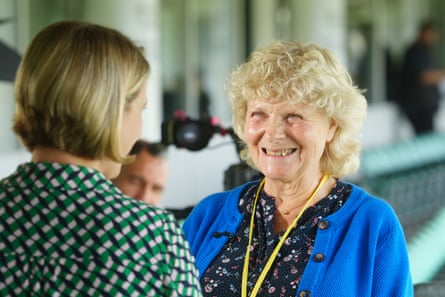

Twenty-three years on from his wrongful conviction, the toll taken on Parmod Kalia was still clear as he attended the publication of the first findings from the Post Office Horizon IT Inquiry.
Even by the horrific standards of the falsely-accused post office operators’ experiences detailed in the report , Kalia’s ordeal and the destruction it inflicted on his family stood out as particularly shocking.
“The children just didn’t know what was going on and they were asking me: ‘Dad have you taken the money?’ And I just didn’t have the answers,” Kalia recalled, having read the account on page 30 of his struggles to obtain redress even after his conviction for a theft of £22,202.01 had been quashed.
His second son, Mahesh, who was 17 at the time of the conviction, told the inquiry he and his father went on to be practically estranged for a further 17 years. Parmod Kalia was also among the 59 people the report identifies as having been driven to contemplate killing themselves.
“I attempted to commit suicide a number of times until I was helped,” he said. “There was a point too when my marriage was under strain as well, but hopefully we’re rebuilding bridges again, and trying to make up for lost time, for the lost years.”
Attending the publication of the report at the Oval in London, Kalia welcomed the findings of the inquiry chair, Sir Wyn Williams, that Post Office bosses should have known their Horizon IT software was faulty but “maintained the fiction that its data was always accurate”.
Yet the former post office operator – one of about 1,000 convicted of offences including theft, false accounting and fraud, based on faulty computer data between 1999 and 2015 – suggested the Post Office was still dragging its feet and “playing dirty tricks” on the topic of compensation.
“As far as the Post Office is concerned, I think it would still be better if someone spoke to me face to face, looked me in the eye and just acknowledged and accepted they have done wrong, and continue to do so,” he said.

Parmod Kalia on ITV’s Good Morning Britain earlier this year.Photograph: Ken McKay/ITV/Shutterstock
“That could be due to an institutional issue, but I think it could also be a personal grudge as well against me, as one of the original people who went to court and sought to challenge them. It’s a case of: ‘How dare we?’ And it hangs over me every day.”
For those survivors in attendance, the memories of the roughly 350 people who died before this day came weighed heavily, including 13 who it is believed may have taken their own lives.
“We’ve lost so many people along the way and we think of them all the time, even on days like this, which is a good day, but it’s why I would urge government to act on this report’s findings as soon as possible as we’re not getting any younger,” said Seema Misra, a former Surrey post office operator who was wrongly jailed while pregnant.
Misra said she and fellow victims of the scandal had been impressed by Williams’s work, even if they wanted to see firmer deadlines for the compensation that remained unpaid for many. “There are more reports coming but this does at least feel like the beginning of the end.”
Scott Darlington, a branch owner-operator in Cheshire whose suspended prison sentence for false accounting has been quashed, raised an eyebrow at the finding that the government and Post Office should make a public announcement defining the phrase “full and fair financial redress”.
“It’s a scathing report, but I think it could have been more scathing to be honest. Does it really take five years to come up with a definition of what is ‘full and fair’?” says Darlington, who is still waiting for compensation.
“I just basically want everything that I’ve lost, not an offer on what they are prepared to do … If it was in America we’d all be getting tens of millions of pounds a year, but we just want what we deserve for what we have been put through, no less.”
Darlington said he had “speed-read” parts of the report and would look over it later, but for now the day was about coming together with what has come to be almost a surrogate family. “Over the years we’ve made deep friendships, so it’s nice to see everyone again and feel at least that we might be heading towards some kind of final resolution,” he said.
Asked about Paula Vennells, who was the chief executive of the Post Office between 2012 and 2019 and is a central figure in the scandal, Darlington said he wasn’t sure how much she featured in the minds of victims. “Everybody is still hoping that she has to pay for it really, and not just her. I mean, there’s plenty of people across all the teams. The tentacles go far and wide as far as people who were complicit.”
Jo Hamilton, one of the best-known victims of the scandal, was glowing about the report.
Jo Hamilton’s joy was clear after the first part of the report was published.Photograph: Jeff Moore/PA
“Oh, it’s a very good piece of work and there’s a finger wag from Sir Wyn at the government, I think, because it is effectively in charge of all the schemes now. Five years on, he’s just told them to define ‘full and fair’ because obviously what we think is full and fair isn’t what they think is full and fair, and they have until 10 October to define that.”
“When you’ve had your claim professionally worked out and they just come back to you with the most ridiculous offer, it’s incredible,” said Hamilton, who was wrongly accused of stealing more than £36,000 from the post office branch she was in charge of at the time in South Warnborough, Hampshire. To avoid a jail sentence, she pleaded guilty to the lesser charge of false accounting, and was prosecuted in 2006.
Hamilton has now at last been paid in full, after settling at 80% of what she had claimed for before it was topped up, but she is resolute about continuing the struggle on behalf of others. “I’m still fighting for everybody … I still can’t shut the Post Office out of my life until everyone is paid.”
One line in particular jumped out of the report for Hamilton, where Williams wrote of how the problems with the Horizon IT system would have been no secret at various levels of the company.
“I am satisfied from the evidence that I have heard that a number of senior, and not so senior, employees of the Post Office knew or, at the very least, should have known that Legacy Horizon was capable of error,” wrote the inquiry chair.
For Hamilton, this brought great satisfaction. “To me, it means everybody. I really picked it out. They can’t all have been ignorant of what was going on and it went from the foot soldiers all the way up. I think the next part, when comes to any criminal proceedings, could be very interesting.”
- In the UK and Ireland, Samaritans can be contacted on freephone 116 123, or email jo@samaritans.org or jo@samaritans.ie . In the US, you can call or text the National Suicide Prevention Lifeline on 988, chat on 988lifeline.org , or text HOME to 741741 to connect with a crisis counselor. In Australia, the crisis support service Lifeline is 13 11 14. Other international helplines can be found at befrienders.org